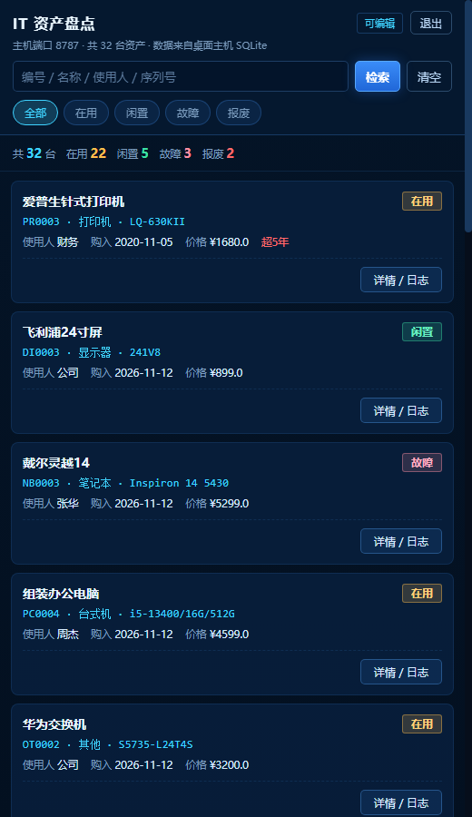
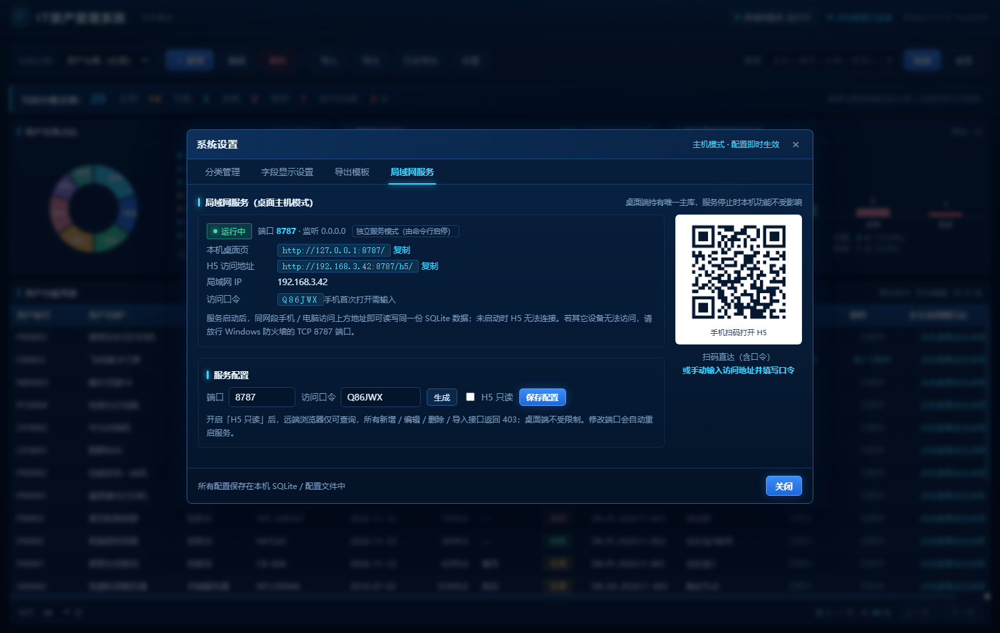

一屏看清家底
深色运维看板：KPI 汇总、分类占比环图、状态柱状图、搜索词云，打开第一屏就知道有多少设备、什么状态。
Excel 能记，但更新靠自觉；贴过的标签会掉；微信里的截图三个月后就找不到了。
在用、闲置、故障、报废混在一起，超期设备没人说得清。
台账在 Excel、照片在微信、附件在邮箱，改完不知道落在哪。
谁换了使用人、谁改了状态，交接审计时全靠翻聊天记录。
现场核对一台，得跑回电脑前查一次，效率低还容易漏。
从录入、统计到留痕、盘点，收成一个你能自己掌控的小工具。
深色运维看板：KPI 汇总、分类占比环图、状态柱状图、搜索词云，打开第一屏就知道有多少设备、什么状态。
双击即编辑：编号、分类、型号、购入日期、价格、使用人、状态、序列号、备注，还可挂 4 张图片与 3 个附件。
导入、换人、改状态、传文件，按时间一条条排着。交接、审计、扯皮时，翻日志比翻聊天记录靠谱得多。
从旧台账迁过来成本低，日常也能导出成表。分类与编号前缀可自定义，新资产按规则自动出号。
数据就存在自己电脑的单文件 SQLite 里，断网、内网隔离照样用。拷走数据目录就是备份，不占公网资源。
主机开局域网服务，手机扫码连上就能查、能改。可设只读，防止现场误改，保存即写回同一份库。
这是 IT-AMS 最「落地」的能力。桌面端、浏览器、手机，读写的是同一份数据——不是各导一份 Excel 再对账。
一键启动服务
三端实时同库

默认端口 8787，自动给出访问地址、二维码与口令，还能开「H5 只读」。
按状态筛选、卡片翻设备，看型号、序列号、价格、使用人；图片放大、附件下载。
改状态或使用人，保存即写回同一库并记进日志。关掉服务就不占公网资源。

Electron 桌面端同时充当数据主机；需要协作时，主进程里一键拉起局域网服务。业务内核与传输分离，端有多份，数据只有一份。
选 sql.js 而不是原生 SQLite：绿色版解压即跑，免去 Electron ABI / 重建模块的坑。定位是办公室中小台账，不做高并发 OLTP。
各平台版本均已备好，绿色版解压即用、DMG 双击安装。数据写在用户目录，升级应用不易误删台账。
双击挂载安装。首次运行前，请先在解压目录执行一次随包的 mac-first-run.sh 解除隔离。
下载 macOS 版 (DMG) 只要 .app 压缩包？下载 ZIP 版当前版本 v1.2.0 · 数据本地存储，无需注册账号 · 安装包托管于 GitHub Releases
不需要。数据存在本机单文件 SQLite（打包后位于用户数据目录），拷走数据目录即可备份。断网、内网隔离环境都能正常使用。
在桌面端设置里点「启动局域网服务」，手机连同一网络，扫描页面上的二维码或输入地址与口令即可。默认端口 8787，记得在防火墙放行。
面向几十到几百台设备的中小台账，按约万级以内设计。定位是办公室局域网资产工具，不是高并发云端 CMDB。
当前是口令级保护，可开启「H5 只读」防止现场误改。超大型多组织 RBAC、公网多租户不是现阶段目标，但同一套 API 后续可抽成独立服务。
已列入 V1.3：每台资产唯一二维码、标签打印、PC/Web 盘点列表、H5 摄像头扫码写入盘点单。架构上沿用现有 dispatch，不必改动单主机单库前提。